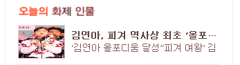
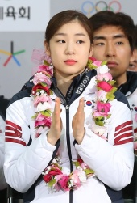
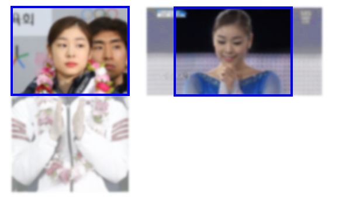

웹사이트 중에는 종종 이미지가 가로세로비(종횡비)를 못 맞추고 짜부라진 모양으로 나오는 곳들이 있다. 크기가 큰 사진들은 괜찮은데 좁은 자리에 가로 세로 크기를 한정시켜 맞춰넣는 얼굴 사진이나 광고 같은 것들에 그런 게 종종 보인다. 얼굴이 너무 넓적하다든지 몸매가 완전 날씬한 형태로 나오는 사진들이 그런 것들이다.
(2018년 편집: 현재는 IE를 제외하고 대부분의 브라우저가 CSS object-fit, object-position 속성을 지원하므로 IE를 무시한다면 아래와 같은 과정 없이 CSS 한 줄로 간단히 이미지 맞춤을 조절할 수 있다.)
우리의 영웅 김연아를 이렇게 만들다니...
위 그림은 신문사 사이트에서 갈무리한 것인데 같은 개발자 입장에서 미안하지만 개발자가 좀 덜 신경을 쓴 게 분명하다. 원래 이미지는 다음처럼 세로가 긴 이미지였다.
원래는 이렇게 예쁨
사실 어렵지 않은 것인데 오늘은 웹페이지에서 이미지의 가로세로비를 유지하면서 틀 안에 맞추려면 어떻게 해야 하는지 알아보겠다.
먼저 기본 개념을 말하자면 다음과 같은 것을 생각해볼 수 있다.
이미지가 로딩되면 자바스크립트로 이미지 본래의 가로, 세로 크기를 구할 수 있다
CSS의 width, height 속성 중 한쪽만 수치 값을 설정하고 다른 쪽은 auto로 하면 비율이 유지된다
CSS의 overflow 속성을 사용해 HTML 요소의 경계 바깥으로 벗어나는 컨텐트를 숨길 수 있다
이미지를 틀에 맞춘다 함은 두 가지 경우가 있다. 틀을 이미지의 뷰포트로서 처리하는 경우와 액자처럼 이미지를 틀 안에 맞춰 넣는 것 같은 경우다.
위에서 네번째 개념은 다음과 같은 경우를 말한다. 예시는 4:3 크기의 틀을 가정했다.
이미지를 맞출 틀 안에 이미지의 가로, 세로 중 짧은 쪽을 맞춰서 틀을 벗어나게 하는 경우. 틀을 벗어나는 이미지 부분은 잘라낸다(숨긴다).
틀이 이미지의 뷰포트처럼 적용되는 경우
이미지를 맞출 틀 안에 이미지의 가로, 세로 중 긴 쪽을 맞춰서 틀을 벗어나지 않게 하는 경우. 대신 틀과 이미지의 비율이 안맞으면 여백이 생긴다.
이미지를 액자 안에 넣은 것처럼 맞추는 경우
여기서는 1번을 해보려고 한다. 2번은 1번에 비해 이미지가 작아지고 여백이 생겨 보기가 안 좋다고 생각한다.
기본적인 HTML 구조는 <div>로 <img>를 감싸는 형태가 된다. <div>는 원하는 가로세로비를 적용하여 크기를 설정해놓고 overflow: hidden을 주면 되고 <img>는 위 1번이나 2번 중 원하는 방식에 따라 크기와 위치를 지정해주면 된다.
아래는 위 1번에서 첫번째 경우일 때 결과적으로 나와야할 소스 예시다. 틀 크기가 120 x 90일 때 그보다 큰 이미지가 잘려보이도록 하는 것이다.
자바스크립트를 어떻게 만들어야 할까? 이미지의 크기를 구해서 가로세로비를 구한 다음 바깥의 가로세로비에 따라 조정해주면 된다. 일단 jQuery 같은 외부 라이브러리를 사용하지 않고 해보도록 하자.
var div =...// 이미지를 감싸는 div var img =...// 이미지 var divAspect =90/120;// div의 가로세로비는 알고 있는 값이다 var imgAspect = img.height / img.width;
if(imgAspect <= divAspect){ // 이미지가 div보다 납작한 경우 세로를 div에 맞추고 가로는 잘라낸다 var imgWidthActual = div.offsetHeight / imgAspect; var imgWidthToBe = div.offsetHeight / divAspect; var marginLeft =-Math.round((imgWidthActual - imgWidthToBe)/2); img.style.cssText ='width: auto; height: 100%; margin-left: ' + marginLeft +'px;' }else{ // 이미지가 div보다 길쭉한 경우 가로를 div에 맞추고 세로를 잘라낸다 img.style.cssText ='width: 100%; height: auto; margin-left: 0;'; }
위에서 8 ~ 10행의 수식 계산은 이미지를 좌우로 가운데 맞춤하기 위한 계산이다. div.offsetHeight / divAspect에서 이미지가 맞춰야할 가로 크기가 나오므로 비율을 맞춰 축소한 이미지의 가로 크기에서 빼고 그 반 값을 margin-left로 설정하는 것이다.
15행의 세로로 길쭉한 이미지에 대해서는 가운데 맞춤을 안하고 있다. 필요하다면 여기도 가운데 맞춤 계산을 해주면 좋을 것이다. 대신 여기서는 margin-left를 초기화시켜준다. 위 루틴이 웹페이지 초기화 과정에서 딱 한번만 호출된다는 보장이 없기 때문에 매번 호출될 때마다 가급적 모든 값을 설정해주는 것이 좋다.
자, 이상으로 마치고 이제 위 소스를 적용한 예시를 아래 링크로 붙인다. 모두들 우리의 영웅 사진은 영웅 답게 보여주도록 하자.